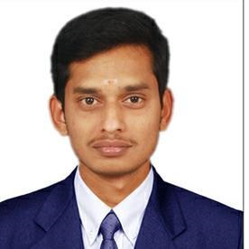

|  |
|
| Marital status :- | Married |
| Nationality:- | Indian |
| Age :- | 36Years |
| Date of Birth :- | 36 |
| Tamil | Read , Write ,speak |
| Engilish | Read ,Write,speak |
| Company :- | TVSMOTOR. Hosur |
| Duration:- | July 2008 to till Date |
| Department:- | Supplier quality assurance - NPD |
| Designation:- | Deputy Manager |
| 7QC tools | ⭐⭐⭐⭐ |
| TPM | ⭐⭐⭐⭐ |
| DFMEA & PFMEA | ⭐⭐⭐⭐ |
| APQP | ⭐⭐⭐⭐ |
| Green belt certified by ISI | ⭐⭐⭐ |
| Design verification | ⭐⭐⭐ |
| Testing of Electrical and electronic parts | ⭐⭐⭐ |
| Place : Housr | |||
| Date:13/11/2021 | SATHISHKUMAR |